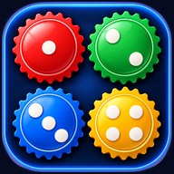

Privacy
Tock · gioco da tavolo a coppie · aggiornata a ottobre 2026
In breve
Tock non chiede email, numero di telefono né password: non devi creare un account. Non mostra pubblicità, non ti segue fuori dal gioco e non vende né cede i tuoi dati a nessuno. Servono solo il nome che scegli tu, un codice anonimo che riconosce il tuo telefono e i dati della partita.
Quali dati usiamo
- Il nome che scrivi (anche un soprannome): lo vedono gli altri giocatori al tavolo e compare nella classifica.
- Un codice anonimo (identificativo, "uid"): alla prima apertura l'app chiede a Firebase Authentication di Google un accesso anonimo, senza email né altri dati tuoi. Ne nasce un codice casuale che resta salvato sul telefono e serve a riconoscerlo: per proteggere il tuo posto al tavolo, per registrare in classifica il tuo risultato una sola volta per partita e per collegare il tuo profilo. Non è usato per pubblicità né per seguirti fuori da Tock.
- Il profilo: il nome che usi e le date di creazione e di ultimo aggiornamento, legati al codice anonimo.
- Il codice di rientro (6 lettere o cifre) del posto che occupi in una stanza: lo vedi solo tu, nelle Impostazioni durante la partita, e serve a rientrare al tuo posto da un altro telefono.
- I dati della partita: stanza, colore, carte, mosse, messaggi della chat della stanza, vittorie e partite giocate (per la classifica). Ogni posto al tavolo e ogni riga della classifica nuova sono collegati al codice anonimo.
- Lo stato "collegato" e la versione dell'app, per mostrare agli altri chi è online.
- Contatori anonimi (per esempio quante partite si giocano in totale), senza nomi.
Sul tuo telefono restano alcune preferenze (tema, suoni, lingua, lezioni fatte, il nome e l'ultima stanza usati) e il codice anonimo. Le preferenze non escono dal telefono. Se cancelli i dati dell'app o del browser, al prossimo avvio ricevi un codice anonimo nuovo: i dati legati a quello vecchio restano finché non chiedi di cancellarli.
Dove sono conservati
Le partite passano da Firebase Realtime Database di Google, con i server in Europa (Belgio). L'accesso anonimo è gestito da Firebase Authentication di Google, che conserva il codice anonimo con la data di creazione e dell'ultimo accesso e, per motivi di sicurezza, può registrare dati tecnici della connessione (per esempio l'indirizzo IP). Le partite possono essere controllate da un programma sul server di Google (Cloud Functions for Firebase, in Europa): riceve le mosse, conserva le carte di ogni partita (che così nessun altro giocatore può vedere) e aggiorna la classifica. Usa solo i dati della partita e il codice anonimo. Google tratta questi dati per nostro conto, secondo le proprie regole sulla protezione dei dati.
Per quanto tempo
Le stanze di gioco restano finché non vengono riusate per nuove partite. Il nome, il profilo, il codice anonimo e la classifica restano finché non chiedi di cancellarli. I codici di rientro restano legati alla stanza a cui si riferiscono.
Giocare con sconosciuti
Con "Gioca subito" l'app ti mette al tavolo con altri giocatori disponibili. In queste partite la chat usa solo frasi già pronte ed emoji: non si possono scrivere messaggi liberi. Non usare il tuo nome e cognome veri se preferisci restare anonimo.
I tuoi diritti e i contatti
Puoi chiedere in qualsiasi momento di vedere, correggere o cancellare il tuo nome, il tuo profilo, il codice anonimo, le tue partite e la tua riga in classifica. Scrivi a miroga.dream@gmail.com indicando il nome usato nell'app e, se possibile, quando e in quale stanza hai giocato. Il nome da solo non basta a dire che i dati sono tuoi (più persone possono usare lo stesso nome): per questo potremmo chiederti il codice di rientro che vedi nelle Impostazioni durante una partita.
Responsabile dell'app: Mig (sviluppatore di Tock).
Diritti
© 2026 Mig. Tutti i diritti riservati. Il gioco Tock (codice, grafica, icone, suoni e testi dell'app) non può essere copiato, modificato o ripubblicato senza permesso scritto.
Bambini
L'app non chiede dati che identificano una persona e non è pensata in modo particolare per i bambini sotto i 13 anni.
English summary
Tock needs no email, phone number or password, shows no ads, does not follow you outside the game and does not sell data. It uses the nickname you choose, an anonymous ID (uid) created by Google Firebase Authentication anonymous sign-in and kept on your device (to protect your seat, record your result once per game and link your profile: nickname and dates), a 6-character rejoin code only you can see, and game data (rooms, moves, room chat, wins for the leaderboard), stored on Google Firebase Realtime Database (EU servers). Games may be refereed by a program on Google's servers (Cloud Functions for Firebase, EU) that receives moves, keeps each game's cards hidden from other players and updates the leaderboard, using only game data and the anonymous ID. Firebase Authentication keeps the anonymous ID with its creation and last sign-in dates and may log technical connection data (such as the IP address) for security. Data is kept until you ask to delete it. Games with strangers ("Gioca subito") only allow preset chat phrases. To view or delete your data, write to miroga.dream@gmail.com with the nickname you used and, if possible, when and in which room you played; we may ask for your rejoin code to confirm the data is yours.
© 2026 Mig. All rights reserved. The Tock app (code, graphics, icons, sounds and texts) may not be copied, modified or republished without written permission.